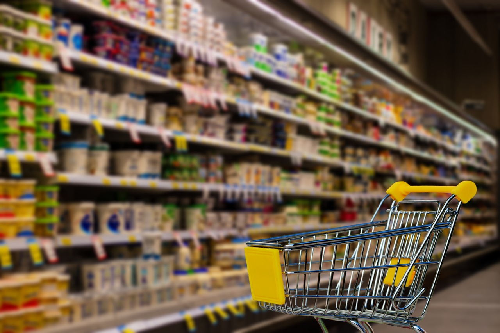

Restaurants
Taniti currently has 10 restaurants: five serve mostly local fish and rice, three serve American-style meals, and two serve Pan-Asian cuisine.
| Local restaurants | American restaurants | Pan-Asian restaurants |
|---|---|---|
Grocery stores
|
Taniti has two supermarkets, two smaller grocery stores, and one convenience store that is open 24 hours a day. |
 |